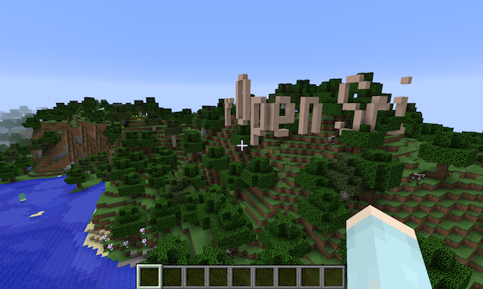
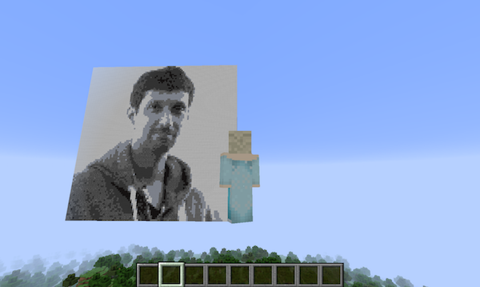
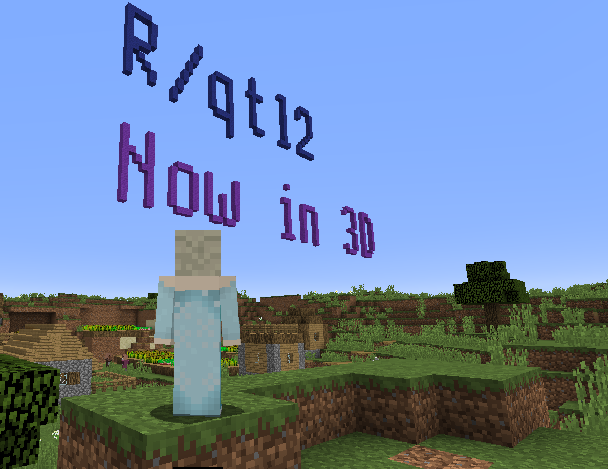

It’s been nearly two years since I attended the RopenSci UnConf 2017 in LA and worked with Gergely Daróczi, Brooke Anderson, David Smith, Mario Inchiosa, and Adi Zaidi to create the miner package for interacting with Minecraft from R. We spent a half-day writing the package and then a day and a half playing, with a bunch of our ideas implemented in the craft package and illustrated in the bookdown book, R programming with Minecraft.
I’d meant to follow up with a bunch more on the stuff we’d done, and to really finish up and polish the book. But, well, I didn’t. But I’m going to try to do so now. I’ll start by explaining how I was able to write text in Minecraft, like this:

My goal was to make a ggplot scatterplot
Once we had miner up and running, the first thing I wanted to do was render a picture out of blocks. Specifically, I wanted to create a picture of Karthik in Minecraft. And so I did:

My next goal was to make a ggplot2::theme_gray()-styled scatterplot
within Minecraft. Like, I wasn’t so ambitious that I wanted to add a
geom_minecraft() or a ggplot2 Minecraft plugin, but I thought it’d
be cool to make an image of a ggplot2-style graph in Minecraft and
then pretend that I’d done it properly. If I can create an image in
Minecraft, then of course I can create a scatterplot. The only tricky
part would be the axis labels: being able to write text in Minecraft.
(I mean, you can probably guess that I first tried saving a graph to an image file and then rendering that in Minecraft. But it looked terrible because the points in the scatterplot wouldn’t be captured well, and the text in the axis labels was especially terrible.)
Pixel-based fonts
It seemed like I just needed some old-style, pixelated fonts. You know, like the ones used on LCD displays. It took a lot of googling, but I finally found this font bitmaps page at uzebox.org, which has a big list of font sizes, and then for each font size there’s a bunch of PNG images with different fonts in that size. For example, here’s the one I’m using for the 6x8 font:
{kind=link}
Yeah so that’s great. I could see these images of the fonts, with the available characters, but what I wanted was like a bitmap: for example, for each character in a 6x8 font, I wanted 0s and 1s indicating which bits need to be dark versus light.
Ugh, I spent a couple of hours googling and puzzling over this. Why would they provide these images and not provide a bitmap, so that you could actually make the font? I mean, the title of that page was “Font Bitmaps”!
Finally I realized that, just like the picture of Karthik that I had made, the PNG images I was looking at were the bitmaps. I could load them into R with the imager package and then grab the 0s and 1s there. The only thing I needed to do was look at the images and type in the sets of characters that were inside the images. For example, for the 6x8 image above, the PNG file is 192 x 24 pixels: 24 pixels tall because there are three rows of characters and they each are 8 characters tall, and 192 pixels wide because there are 32 columns of characters and they are each 6 pixels wide.
The script I used to set up the fonts is hiding inside the craft package.
Rendering text
For text I want to write in Minecraft, I first split it into the individual characters. Then I convert each character into a bitmap.
For each size font, we basically have a matrix of available characters and then a matrix that is the font image bitmap. I find the character in the font, and then pull out the corresponding chunk of the font bitmap. I then paste those bitmaps back together, to get a bitmap for the full text.
Finally, I render it in Minecraft by looping over the elements of the
bitmap matrix of 0s and 1s and adding a block wherever there’s a 1,
using miner::setBlock().
Rotating the text
The other tricky bit was figuring out which direction to draw the text. And like, how many different directions can you draw text in 3d space? Really, I have a terrible spatial sense. And I refuse to admit how long it took me to work through that.
Suffice it to say, there are six directions in Minecraft: north,
south, east, west, up, and down. Your text could go in any of those
directions, but then for each such direction, the top of the text
could be oriented in one of four of the other possible directions. I
wrote an internal function
craft::check_dirtop()
to check compatibility. (That’s “check dir top” not “check dirt op”, by
the way.)
And that was pretty much that. It doesn’t seem like it was that hard, but there were some important conceptual puzzles that took like 2/3 of my time on this. In the end the code to grab the font information is just about 80 lines, and the code to render text in Minecraft is just about 160 lines. And it allowed me to do stuff like this:

Update 2020-12-14: the miner and craft packages and the miner book have been moved from ROpenSciLabs to kbroman.